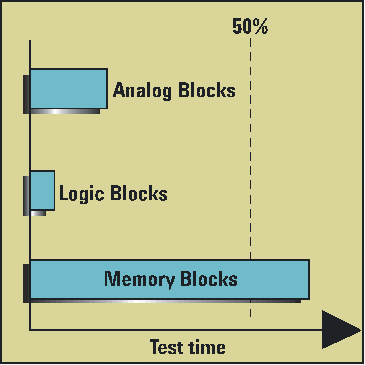

Example of a device with a dominant memory core test time
- If a device has a memory core that requires greater than 50% of the test time, as shown in the figure below, the effectiveness of CCT is reduced by the following:
- Smaller percentage decrease in overall test time
- Analog core testing restrictions.
While it is unlikely that CCT will greatly improve the overall test time, CCT still provides the opportunity to test the device closer to its natural operating environment by testing the individual IP cores in parallel at their own data rates.

Functional changes
- Introduced before SmarTest 6.3.2